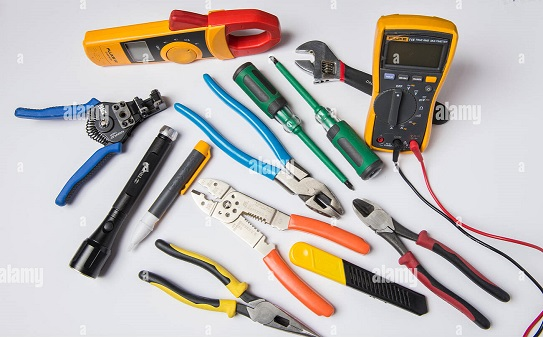

Acerca de Nosotros
Nos ubicamos en la Provincia del Tamarugal en la comuna de Pozo Almonte. AutomataSol, tiene la solución. Nos especializamos en el montaje de instalación de sistemas fotovoltaicos de última generación. Aprovechando la abundante luz solar de Tarapacá para proporcionar energía limpia, confiable y asequible a nuestros clientes. Diferenciandonos a través de nuestro compromiso con la excelencia y la sostenibilidad. Además, entregamos asesoramiento con expertos para ayudar a nuestros clientes en elegir la solución adecuada para sus necesidades. Cambiando su vida y cuidando nuestro planeta.
Nuestra misión es: "Ser Líderes reconocidos en la transformación de Pozo Almonte en una comunidad más sostenible y autosuficiente en términos de energía".
Ofrecemos profesionales de instalacion de sistemas fotovoltaicos de calidad, asesoría personalizada, servicios de monitoreo y mantención.
Nuestra Ubicación
Nuestro establecimiento está ubicado en la Provincia del Tamarugal
Diferenciales
- Asesoria personalizada a los clientes
- Servicio de monitoreo y mantención
- Localización
- Profesionales calificados
- Excelencia
- Sostenibilidad